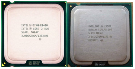
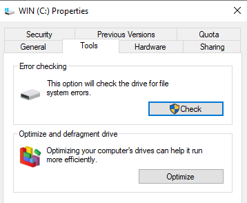
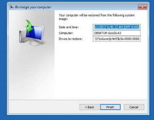
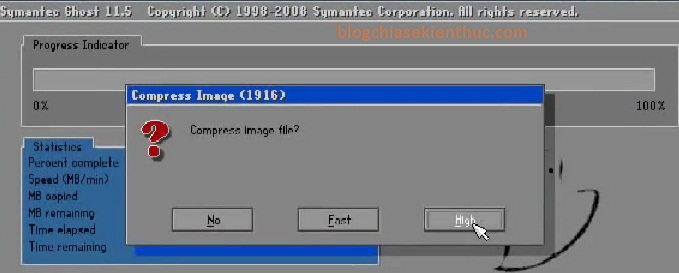
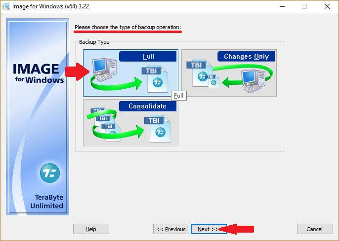

TỐI ƯU HÓA HỆ THỐNG
- Tối ưu hóa phần cứng
+ Nâng cấp phần cứng.
Hình: Nâng cấp lên CPU cùng dòng đời cao hơn
+ Hiệu chỉnh thông số kỹ thuật:Để giúp máy tính với cấu hình thấp tuy nhiên hoạt động được với hiệu quả cao, việc hiệu chỉnh lại thông số máy tính cho phù hợp là rất cần thiết. Hiệu chỉnh ở đây có thể nói đến tăng RAM ảo cho máy tính giúp quá trình đọc ghi ở bộ nhớ đệm sẽ tốt hơn, giảm được giật, lag trong quá trình sử dụng. RAM là bộ nhớ truy xuất ngẫu nhiên, quá trình hoạt động của máy tính sẽ ghi lại các công việc cần thực hiện vào RAM với vai trò là bộ nhớ đệm. Các dữ liệu ghi trong RAM sẽ được lấy ra xử lý trực tiếp với CPU do đó thao tác sẽ thực hiện nhanh hơn.
RAM ảo là một biện pháp giúp tăng dung lượng RAM lên từ đó có thể thực hiện nhiều thao tác cùng một lúc mà máy tính vẫn trơn tru. Máy tính sẽ sử dụng 1 phần bộ nhớ của ổ đĩa cứng (HDD) để là RAM ảo. Cách thay đổi dung lượng RAM ảo như sau.
Click chuột phải vào my computer/chọn properties/ chọn thẻ Advanced/performance/settings/advanced/Change/ custom size và đặt giá trị RAM ảo, nên đặt RAM ảo bằng một nửa hoặc bằng RAM hiện có trên máy tính. Ví dụ như hình dưới đặt RAM ảo là 2GB.

Hình: Thiết lập RAM ảo cho máy tính
- Tối ưu hóa phần mềm.
+ Tối ưu hóa Hệ điều hành (Tắt các dịch vụ không cần thiết)
Sử dụng tổ hợp phím Ctrl +Alt + del để mở Task Manager, ở thẻ processes nếu thấy có ứng dụng nào sử dụng nhiều tài nguyên như CPU, RAM, HDD cần kiểm tra xem đó là ứng dụng gì, nếu là ứng dụng không cần thiết thì tắt đi.
Hình: Công cụ dọn dẹp ổ cứng và chống phân mảng
+ Sử dụng công cụ chống phân mảnh dữ liệu, công cụ dọn dẹp hệ thống. Các công cụ sẵn có trong hệ điều hành có thể sử dụng như như disk cleanup hoặc defragment drive.
+ Sử dụng các chương trình phòng, chống Virus.
- Chạy kiểm tra các yêu cầu của khách hàng (Cài đặt phần mềm, kiểm tra lỗi đã khắc phục).
- Sao lưu hệ điều hành (GHOST): Tạo bản lưu trữ dự phòng .
Hình: Sử dụng công cụ của Windows
Hình: Sử dụng norton ghost
Hình: Sử dụng phần mềm terabyte